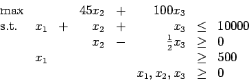
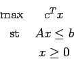
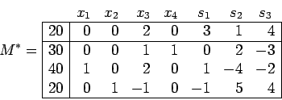
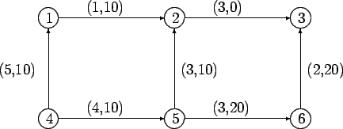
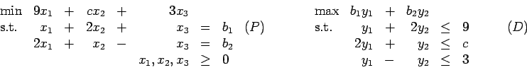
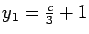
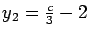
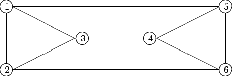
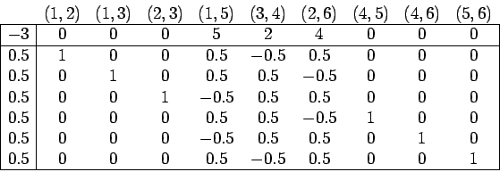
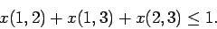

Second Exam, Friday, November 7, 2002.
You may use any result from your notes or a homework that is clearly stated.
You may use one sheet of handwritten notes, but no other sources.
The exam consists of five questions, and lasts one hundred minutes.
- 1.
- (20 points)
Up to 10000 seats are to be divided between the media, the competing
universities and the general public.
At least half as many tickets should go to the competing universities
as to the general public.
The problem can be modeled using the linear program

where x1, x2, and x3 denote the number of seats assigned to
the media, to the competing universities, and to the general public,
respectively.
- (a)
- (10 points)
Find the dual linear program to the linear program
- (b)
- (10 points)
To accommodate high demand from student supporters of the participating
universities, the NCAA is considering marketing a new ``scrunch''
seat that consumes only 80% of a regular bleacher seat but counts fully
against the ``university
half public'' rule.
Could an optimal solution allocate any such seats at a ticket price
of $35? At a price of $25?
(Hint: If you formulate the dual problem as in the text,
the optimal dual solution is y1=81.667, y2=-36.667, and
y3=-81.667.)
- 2.
- (15 points; no partial credit)
A resource allocation problem of the form

has optimal tableau

The problem has four products and three resources, so si represents
the amount of resource i which is unused and xi represents the
amount of product i which is produced.
- (a)
- (5 points)
Suppose somebody offered to buy a small amount of resource 1.
How much would you charge for each unit of the resource?
Circle your choice:
1 2 3 4
- (b)
- (5 points)
What is the upper bound k on the number of
units of the resource you would sell at this price?
Circle your choice:
4 5 10 15
20 30 40
- (c)
- (5 points)
Now suppose that you want to sell slightly more than k units
of this resource. Would you charge more or less
than your answer in part (a) for additional units?
Circle your choice:
Charge more than in part (a)
Charge less than in part (a)
- 3.
- (25 points)
Consider the network flow problem shown below, with the indicated
feasible solution. The numbers on each arc give the cost cij
and the flow xij as
(cij,xij).

| Node 1: |
transshipment |
|
Node 4: |
supply 20 |
| Node 2: |
demand 20 |
|
Node 5: |
supply 20 |
| Node 3: |
demand 20 |
|
Node 6: |
transshipment |
- (a)
- (15 points) Find a basic feasible solution that
is at least as good as the given solution.
- (b)
- (10 points) Is the basic feasible solution you found optimal?
- 4.
- (20 points; no partial credit)
Consider the primal-dual pair of linear programming problems:

Assume we have a basic feasible solution with x1 and x3 basic.
- (a)
- (10 points)
Which of the following solutions satisfies complementary slackness?
Circle exactly one:
A: y1=3, y2=3 B: y1=5, y2=2
C:
,

- (b)
- (10 points)
For what range of c is this solution optimal?
Circle exactly one:
A:
B:
C:
D:
E:
- 5.
- (20 points)
We are going to look at an example of the use of the dual simplex method.
Given a graph, a perfect matching pairs off all the vertices.
For example, in the following graph:

there are several perfect matchings, for example:
| |
One matching: |
edges (1,2), (3,4), and (5,6) |
| |
Another matching: |
edges (1,5), (3,4), and (2,6) |
| |
Another matching: |
edges (1,3), (2,6), and (4,5). |
If we give each edge a cost, then the perfect matching problem
is to find the perfect matching of smallest cost.
This problem can be expressed as a linear programming problem,
with the additional constraints that the variables be integer.
The variables are:
With one choice of edge costs for this graph,
we can ignore the integrality restrictions and solve the linear programming
relaxation for this problem, obtaining the following optimal tableau:

This solution obviously does not correspond to a perfect matching.
Any perfect matching can only use at most one of the edges
(1,2), (1,3), (2,3).
We can express this as the following constraint:

- (a)
- (10 points)
Add this constraint to the tableau and pivot so that you have a tableau
which can be attacked using the dual simplex method.
- (b)
- (10 points)
Make one dual simplex pivot in the tableau.
Does the new basic feasible solution correspond to a perfect matching?
John E. Mitchell
2003-10-09